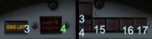

3. Emission Limit light
Limit emisji
4. Master Caution warning light/reset
lampka oraz przycisk resetujący powiadomienie lub ostrzeżenie.
13. AI warning light (RWR activity)
ostrzeżenie radarowego systemu ostrzegawczego
14. SAM launch warning light
surface-to-air missile- ostrzeżenie przed pociskami ziemia-powietrze
15. Low Altitude Warning light
ostrzeżenie przeciw niskiej wysokości
16. Terrain Follow Failure light
sygnalizacja awarii systemu śledzenia ukształtowania terenu
17. Canopy Unlocked warning light
ostrzeżenie przed niezamkniętą osłoną kabiny. (ta szyba nad kokpitem)
YF-23